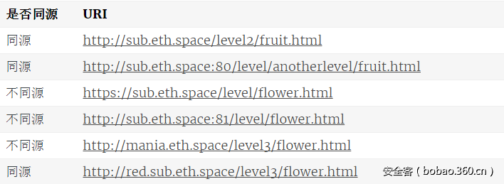

前言
最近打算深入了解xss,csrf漏洞学习。既然如此，那么同源策略必然是要搞清楚。本章主要讨论的是浏览器同源策略，也可以认为是前端相互调用同源策略。至于前后台调用同源策略的解决主要依赖
XMLHttpRequest，具体可以参考你真的会使用XMLHttpRequest吗？
概述
1995年，同源政策由 Netscape 公司引入浏览器。目前，所有浏览器都实行这个政策。
最初，它的含义是指，A网页设置的 Cookie，B网页不能打开，除非这两个网页”同源”。所谓”同源”指的是”三个相同”。
协议相同
域名相同
端口相同
举例来说，http://sub.eth.space/level/flower.html这个网址，协议是http://，域名是sub.eth.space，端口是80（默认端口可以省略）。它的同源情况如下。

1.2 目的
同源政策的目的，是为了保证用户信息的安全，防止恶意的网站窃取数据。
设想这样一种情况：A网站是一家银行，用户登录以后，又去浏览其他网站。如果其他网站可以读取A网站的 Cookie，会发生什么？
很显然，如果 Cookie 包含隐私（比如存款总额），这些信息就会泄漏。更可怕的是，Cookie 往往用来保存用户的登录状态，如果用户没有退出登录，其他网站就可以冒充用户，为所欲为。因为浏览器同时还规定，提交表单不受同源政策的限制。
由此可见，”同源政策”是必需的，否则 Cookie 可以共享，互联网就毫无安全可言了。
1.3 限制范围
随着互联网的发展，”同源政策”越来越严格。目前，如果非同源，共有三种行为受到限制。
（1） Cookie、LocalStorage 和 IndexDB 无法读取。
（2） DOM 无法获得。
（3） AJAX 请求不能发送。
虽然这些限制是必要的，但是有时很不方便，合理的用途也受到影响。
同源策略没有禁止脚本的执行，而是禁止读取HTTP回复
1.4具体限制
我们已经知道了，浏览器会根据同源策略允许或拒绝加载某些资源，但是又一个问题由此而生，我们的网站通常会将静态文件（CSS,JS, 图片）等放置在 CDN 上，那么 CDN 与当前域必然是不同源的，但是神奇的是，这些网站可以正常加载出他们需要的资源并展示给用户，这里为什么又不受同源策略的影响呢？
再比如在使用XMLHttpRequest的时候，又会因为同源策略的限制无法发出请求，那么到底什么情况下会触发同源策略呢？总体来说，页面跨域的行为主要会分为三类，
分别是：
1 | Cross-origin write |
在这三种行为之中，通常情况下只有Cross-origin read是不被允许的，其余的两种是允许的，例如Cross-origin write中的links，重定向以及表单提交，Cross-origin embedding中的资源嵌入。
那么问题又来了，何种资源是允许嵌入的呢？MDN 文档中也给出了一些例子MDN：
1 | <script src="..."></script>标签嵌入跨域脚本。语法错误信息只能在同源脚本中捕捉到。 |
这样一来，可以通过<img>标签加载文件而不受同源策略的影响这件事情就明白了。
疑问
其实我看到这里就开始产生疑问，既然有浏览器同源策略限制，
1.xss是怎么传递cookie。
2.跨域的资源是怎么读取的。
3.服务端是怎么能够读取到浏览器传递的header信息。
接下来就要谈一谈同源策略的规避方法
src标签
具备src的标签
原理：所有具有src属性的HTML标签都是可以跨域的
在浏览器中，<script>、<img>、<iframe>和<link>这几个标签是可以加载跨域（非同源）的资源的，并且加载的方式其实相当于一次普通的GET请求，唯一不同的是，为了安全起见，浏览器不允许这种方式下对加载到的资源的读写操作，而只能使用标签本身应当具备的能力（比如脚本执行、样式应用等等）。
cookie
document.domain
cookie是服务器写入浏览器的一小段信息，只有同源的网页才能共享。但是，两个网页一级域名相同，只是二级域名不同，浏览器允许通过设置document.domain共享 Cookie。
举例来说，A网页是http://w1.example.com/a.html，B网页是http://w2.example.com/b.html，那么只要设置相同的document.domain，两个网页就可以共享Cookie。
document.domain = 'example.com';
现在，A网页通过脚本设置一个 Cookie。
document.cookie = "test1=hello";
B网页就可以读到这个 Cookie。
var allCookie = document.cookie;
注意，这种方法只适用于 Cookie 和 iframe窗口，LocalStorage 和 IndexDB 无法通过这种方法，规避同源政策，而要使用下文介绍的PostMessage API。
另外，服务器也可以在设置Cookie的时候，指定Cookie的所属域名为一级域名，比如.example.com。
Set-Cookie: key=value; domain=.example.com; path=/
这样的话，二级域名和三级域名不用做任何设置，都可以读取这个Cookie。
AJAX
同源政策规定，AJAX请求只能发给同源的网址，否则就报错。
除了架设服务器代理（浏览器请求同源服务器，再由后者请求外部服务），有三种方法规避这个限制。
1 | JSONP |
1.JSONP跨域
原理：<script>是可以跨域的，而且在跨域脚本中可以直接回调当前脚本的函数
script标签是可以加载异域的JavaScript并执行的，通过预先设定好的callback函数来实现和母页面的交互。它有一个大名，叫做JSONP跨域，JSONP是JSON with Padding的略称。它是一个非官方的协议，明明是加载script，为啥和JSON扯上关系呢？原来就是这个callback函数，对它的使用有一个典型的方式，就是通过JSON来传参，即将JSON数据填充进回调函数，这就是JSONP的JSON+Padding的含义。JSONP只支持GET请求。
前端代码
1 | /<script javascript">/` |
后台代码：
1 | <?php |
2. 跨域资源共享（CORS）
原理:服务器设置Access-Control-Allow-Origin HTTP响应头之后，浏览器将会允许跨域请求
CORS是HTML5标准提出的跨域资源共享(Cross Origin Resource Share)，支持GET、POST等所有HTTP请求。CORS需要服务器端设置Access-Control-Allow-Origin头，否则浏览器会因为安全策略拦截返回的信息。
1 | Access-Control-Allow-Origin: * # 允许所有域名访问，或者 |
CORS又分为简单跨域和非简单跨域请求，有关CORS的详细介绍请看阮一峰的跨域资源共享CORS 详解，里面讲解的非常详细。
3. WebSocket
WebSocket是一种通信协议，使用ws://（非加密）和wss://（加密）作为协议前缀。该协议不实行同源政策，只要服务器支持，就可以通过它进行跨源通信。
下面是一个例子，浏览器发出的WebSocket请求的头信息（摘自维基百科）。
1 | GET /chat HTTP/1.1 |
上面代码中，有一个字段是Origin，表示该请求的请求源（origin），即发自哪个域名。
正是因为有了Origin这个字段，所以WebSocket才没有实行同源政策。因为服务器可以根据这个字段，判断是否许可本次通信。如果该域名在白名单内，服务器就会做出如下回应。
1 | HTTP/1.1 101 Switching Protocols |
iframe（DOM型）
如果两个网页不同源，就无法拿到对方的DOM。典型的例子是iframe窗口和window.open方法打开的窗口，它们与父窗口无法通信。
比如，父窗口运行下面的命令，如果iframe窗口不是同源，就会报错。
1 | document.getElementById("myIFrame").contentWindow.document |
上面命令中，父窗口想获取子窗口的DOM，因为跨源导致报错。
反之亦然，子窗口获取主窗口的DOM也会报错。
window.parent.document.body
// 报错
如果两个窗口一级域名相同，只是二级域名不同，那么设置上一节介绍的document.domain属性，就可以规避同源政策，拿到DOM。
对于完全不同源的网站，目前有三种方法，可以解决跨域窗口的通信问题。
片段识别符（fragment identifier）
window.name
跨文档通信API（Cross-document messaging）
3.1 片段识别符
片段标识符（fragment identifier）指的是，URL的#号后面的部分，比如http://example.com/x.html#fragment的#fragment。如果只是改变片段标识符，页面不会重新刷新。
父窗口可以把信息，写入子窗口的片段标识符。
1 | var src = originURL + '#' + data; |
子窗口通过监听hashchange事件得到通知。
1 | window.onhashchange = checkMessage; |
同样的，子窗口也可以改变父窗口的片段标识符。
parent.location.href= target + "#" + hash;
3.2 window.name
浏览器窗口有window.name属性。这个属性的最大特点是，无论是否同源，只要在同一个窗口里，前一个网页设置了这个属性，后一个网页可以读取它。
父窗口先打开一个子窗口，载入一个不同源的网页，该网页将信息写入window.name属性。
window.name = data;
接着，子窗口跳回一个与主窗口同域的网址。
location = 'http://parent.url.com/xxx.html';
然后，主窗口就可以读取子窗口的window.name了。
var data = document.getElementById('myFrame').contentWindow.name;
这种方法的优点是，window.name容量很大，可以放置非常长的字符串；缺点是必须监听子窗口window.name属性的变化，影响网页性能。
3.3 window.postMessage
该方法只解决了前端两个窗口的通信，但无法解决前后台调用的跨域问题
上面两种方法都属于破解，HTML5为了解决这个问题，引入了一个全新的API：跨文档通信 API（Cross-document messaging）。
这个API为window对象新增了一个window.postMessage方法，允许跨窗口通信，不论这两个窗口是否同源。
举例来说，父窗口http://aaa.com向子窗口http://bbb.com发消息，调用postMessage方法就可以了。
1 | var popup = window.open('http://bbb.com', 'title'); |
postMessage方法的第一个参数是具体的信息内容，第二个参数是接收消息的窗口的源（origin），即”协议 + 域名 + 端口”。也可以设为*，表示不限制域名，向所有窗口发送。
子窗口向父窗口发送消息的写法类似。
window.opener.postMessage('Nice to see you', 'http://aaa.com');
父窗口和子窗口都可以通过message事件，监听对方的消息。
1 | window.addEventListener('message', function(e) { |
message事件的事件对象event，提供以下三个属性。
1 | event.source：发送消息的窗口 |
下面的例子是，子窗口通过event.source属性引用父窗口，然后发送消息。
1 | window.addEventListener('message', receiveMessage); |
event.origin属性可以过滤不是发给本窗口的消息。
1 | window.addEventListener('message', receiveMessage); |
3.4 LocalStorage
通过window.postMessage，读写其他窗口的 LocalStorage 也成为了可能。
下面是一个例子，主窗口写入iframe子窗口的localStorage。
1 | window.onmessage = function(e) { |
上面代码中，子窗口将父窗口发来的消息，写入自己的LocalStorage。
父窗口发送消息的代码如下。
1 | var win = document.getElementsByTagName('iframe')[0].contentWindow; |